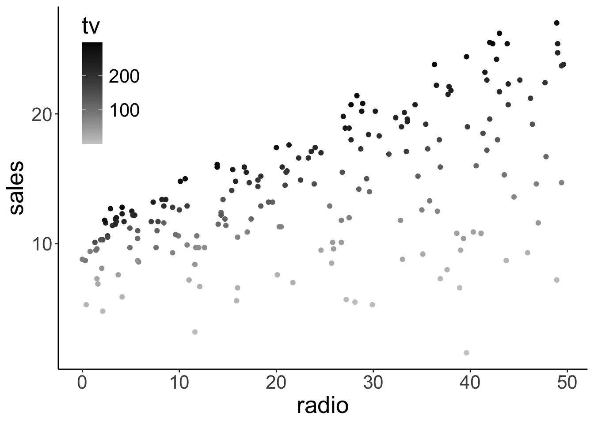
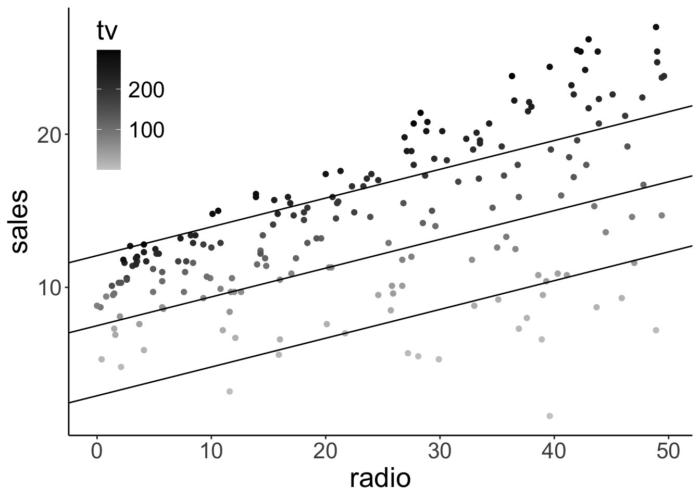
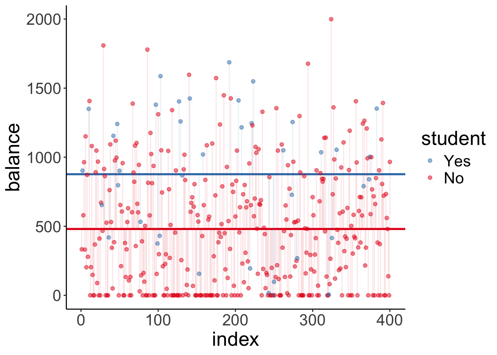
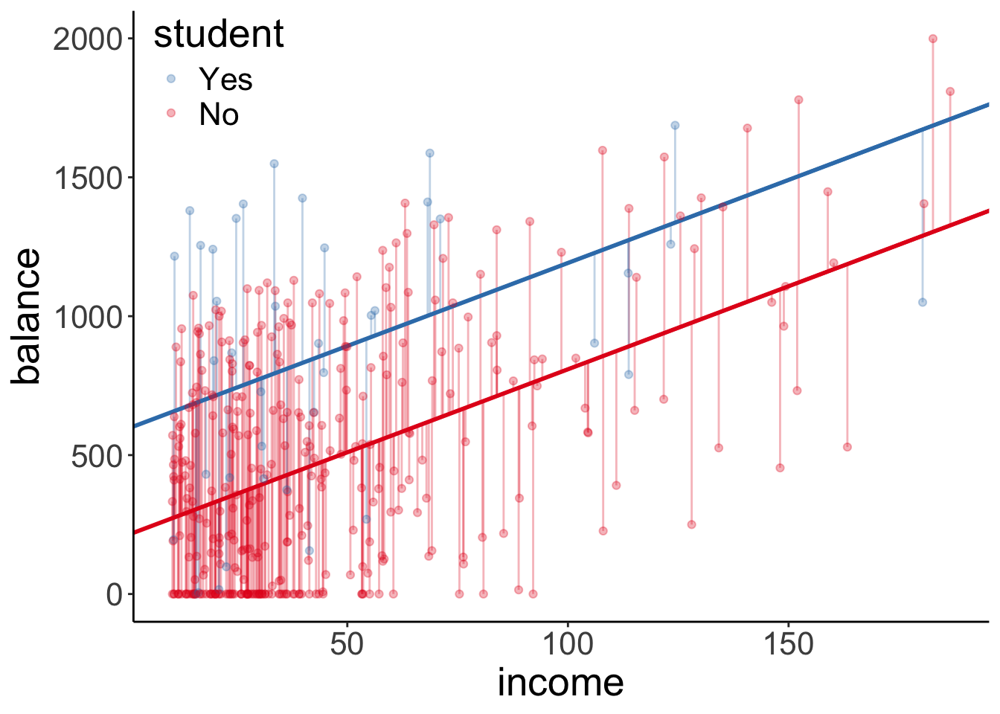
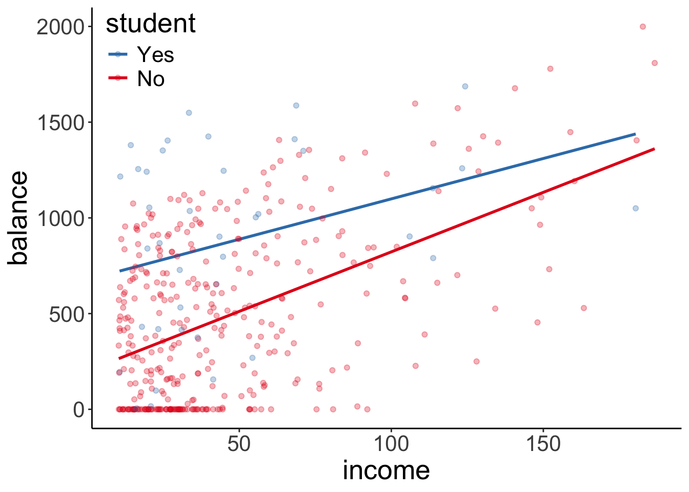

Chapter 11 Linear model 2
11.1 Learning goals
- Multiple regression.
- Appreciate model assumptions.
- Several continuous predictors.
- Hypothesis tests.
- Interpreting parameters.
- Reporting results.
- One categorical predictor.
- Both continuous and categorical predictors.
- Interpreting interactions.
11.2 Load packages and set plotting theme
library("knitr") # for knitting RMarkdown
library("kableExtra") # for making nice tables
library("janitor") # for cleaning column names
library("broom") # for tidying up linear models
library("corrr") # for calculating correlations between many variables
library("corrplot") # for plotting correlations
library("GGally") # for running ggpairs() function
library("tidyverse") # for wrangling, plotting, etc.
# include references for used packages
knitr::write_bib(.packages(), "packages.bib") theme_set(theme_classic() + #set the theme
theme(text = element_text(size = 20))) #set the default text size
opts_chunk$set(comment = "",
fig.show = "hold")11.3 Load data sets
Let’s load the data sets that we’ll explore in this class:
# credit data set
df.credit = read_csv("data/credit.csv") %>%
rename(index = X1) %>%
clean_names()
# advertising data set
df.ads = read_csv("data/advertising.csv") %>%
clean_names() %>%
rename(index = x1)| variable | description |
|---|---|
| income | in thousand dollars |
| limit | credit limit |
| rating | credit rating |
| cards | number of credit cards |
| age | in years |
| education | years of education |
| gender | male or female |
| student | student or not |
| married | married or not |
| ethnicity | African American, Asian, Caucasian |
| balance | average credit card debt |
11.4 Multiple continuous variables
Let’s take a look at a case where we have multiple continuous predictor variables. In this case, we want to make sure that our predictors are not too highly correlated with each other (as this makes the interpration of how much each variable explains the outcome difficult). So we first need to explore the pairwise correlations between variables.
11.4.1 Explore correlations
The corrr package is great for exploring correlations between variables. To find out more how corrr works, take a look at this vignette:
vignette(topic = "using-corrr",
package = "corrr")Here is an example that illustrates some of the key functions in the corrr package (using the advertisement data):
df.ads %>%
select(where(is.numeric)) %>%
correlate(quiet = T) %>%
shave() %>%
fashion() term index tv radio newspaper sales
1 index
2 tv .02
3 radio -.11 .05
4 newspaper -.15 .06 .35
5 sales -.05 .78 .58 .23 11.4.1.1 Visualize correlations
11.4.1.1.1 Correlations with the dependent variable
df.credit %>%
select(where(is.numeric)) %>%
correlate(quiet = T) %>%
select(term, income) %>%
mutate(term = reorder(term, income)) %>%
drop_na() %>%
ggplot(aes(x = term,
y = income,
fill = income)) +
geom_hline(yintercept = 0) +
geom_col(color = "black",
show.legend = F) +
scale_fill_gradient2(low = "indianred2",
mid = "white",
high = "skyblue1",
limits = c(-1, 1)) +
coord_flip() +
theme(axis.title.y = element_blank())
Figure 2.6: Bar plot illustrating how strongly different variables correlate with income.
11.4.1.1.2 All pairwise correlations
tmp = df.credit %>%
select(where(is.numeric), -index) %>%
correlate(diagonal = 0,
quiet = T) %>%
rearrange() %>%
select(-term) %>%
as.matrix() %>%
corrplot()
df.ads %>%
select(-index) %>%
ggpairs()
Figure 11.1: Pairwise correlations with scatter plots, correlation values, and densities on the diagonal.
With some customization:
df.ads %>%
select(-index) %>%
ggpairs(lower = list(continuous = wrap("points",
alpha = 0.3)),
upper = list(continuous = wrap("cor", size = 8))) +
theme(panel.grid.major = element_blank())
Figure 9.1: Pairwise correlations with scatter plots, correlation values, and densities on the diagonal (customized).
11.4.2 Multipe regression
Now that we’ve explored the correlations, let’s have a go at the multiple regression.
11.4.2.1 Visualization
We’ll first take another look at the pairwise relationships:
tmp.x = "tv"
# tmp.x = "radio"
# tmp.x = "newspaper"
# tmp.y = "radio"
tmp.y = "radio"
# tmp.y = "tv"
ggplot(df.ads,
aes_string(x = tmp.x, y = tmp.y)) +
stat_smooth(method = "lm",
color = "black",
fullrange = T) +
geom_point(alpha = 0.3) +
annotate(geom = "text",
x = -Inf,
y = Inf,
hjust = -0.5,
vjust = 1.5,
label = str_c("r = ", cor(df.ads[[tmp.x]], df.ads[[tmp.y]]) %>%
round(2) %>% # round
str_remove("^0+") # remove 0
),
size = 8) +
theme(text = element_text(size = 30))`geom_smooth()` using formula 'y ~ x'
TV ads and radio ads aren’t correlated. Yay!
11.4.2.2 Fitting, hypothesis testing, evaluation
Let’s see whether adding radio ads is worth it (over and above having TV ads).
# fit the models
fit_c = lm(sales ~ 1 + tv, data = df.ads)
fit_a = lm(sales ~ 1 + tv + radio, data = df.ads)
# do the F test
anova(fit_c, fit_a)Analysis of Variance Table
Model 1: sales ~ 1 + tv
Model 2: sales ~ 1 + tv + radio
Res.Df RSS Df Sum of Sq F Pr(>F)
1 198 2102.53
2 197 556.91 1 1545.6 546.74 < 2.2e-16 ***
---
Signif. codes: 0 '***' 0.001 '**' 0.01 '*' 0.05 '.' 0.1 ' ' 1It’s worth it!
Let’s evaluate how well the model actually does. We do this by taking a look at the residual plot, and check whether the residuals are normally distributed.
tmp.fit = lm(sales ~ 1 + tv + radio, data = df.ads)
df.plot = tmp.fit %>%
augment() %>%
clean_names()
# residual plot
ggplot(df.plot,
aes(x = fitted,
y = resid)) +
geom_point()
# density of residuals
ggplot(df.plot,
aes(x = resid)) +
stat_density(geom = "line")
# QQ plot
ggplot(df.plot,
aes(sample = resid)) +
geom_qq() +
geom_qq_line() 


There is a slight non-linear trend in the residuals. We can also see that the residuals aren’t perfectly normally distributed. We’ll see later what we can do about this …
Let’s see how well the model does overall:
fit_a %>%
glance() %>%
kable(digits = 3) %>%
kable_styling(bootstrap_options = "striped",
full_width = F)| r.squared | adj.r.squared | sigma | statistic | p.value | df | logLik | AIC | BIC | deviance | df.residual | nobs |
|---|---|---|---|---|---|---|---|---|---|---|---|
| 0.897 | 0.896 | 1.681 | 859.618 | 0 | 2 | -386.197 | 780.394 | 793.587 | 556.914 | 197 | 200 |
As we can see, the model almost explains 90% of the variance. That’s very decent!
11.4.2.3 Visualizing the model fits
Here is a way of visualizing how both tv ads and radio ads affect sales:
df.plot = lm(sales ~ 1 + tv + radio, data = df.ads) %>%
augment() %>%
clean_names()
df.tidy = lm(sales ~ 1 + tv + radio, data = df.ads) %>%
tidy()
ggplot(df.plot, aes(x = radio, y = sales, color = tv)) +
geom_point() +
scale_color_gradient(low = "gray80", high = "black") +
theme(legend.position = c(0.1, 0.8))
We used color here to encode TV ads (and the x-axis for the radio ads).
In addition, we might want to illustrate what relationship between radio ads and sales the model predicts for three distinct values for TV ads. Like so:
df.plot = lm(sales ~ 1 + tv + radio, data = df.ads) %>%
augment() %>%
clean_names()
df.tidy = lm(sales ~ 1 + tv + radio, data = df.ads) %>%
tidy()
ggplot(df.plot, aes(x = radio, y = sales, color = tv)) +
geom_point() +
geom_abline(intercept = df.tidy$estimate[1] + df.tidy$estimate[2] * 200,
slope = df.tidy$estimate[3]) +
geom_abline(intercept = df.tidy$estimate[1] + df.tidy$estimate[2] * 100,
slope = df.tidy$estimate[3]) +
geom_abline(intercept = df.tidy$estimate[1] + df.tidy$estimate[2] * 0,
slope = df.tidy$estimate[3]) +
scale_color_gradient(low = "gray80", high = "black") +
theme(legend.position = c(0.1, 0.8))
11.4.2.4 Interpreting the model fits
Fitting the augmented model yields the following estimates for the coefficients in the model:
fit_a %>%
tidy(conf.int = T) %>%
head(10) %>%
kable(digits = 2) %>%
kable_styling(bootstrap_options = "striped",
full_width = F)| term | estimate | std.error | statistic | p.value | conf.low | conf.high |
|---|---|---|---|---|---|---|
| (Intercept) | 2.92 | 0.29 | 9.92 | 0 | 2.34 | 3.50 |
| tv | 0.05 | 0.00 | 32.91 | 0 | 0.04 | 0.05 |
| radio | 0.19 | 0.01 | 23.38 | 0 | 0.17 | 0.20 |
11.4.2.5 Standardizing the predictors
One thing we can do to make different predictors more comparable is to standardize them.
df.ads = df.ads %>%
mutate(across(.cols = c(tv, radio),
.fns = ~ scale(.),
.names = "{.col}_scaled"))
df.ads %>%
select(-newspaper) %>%
head(10) %>%
kable(digits = 2) %>%
kable_styling(bootstrap_options = "striped",
full_width = F)| index | tv | radio | sales | tv_scaled | radio_scaled |
|---|---|---|---|---|---|
| 1 | 230.1 | 37.8 | 22.1 | 0.96742460 | 0.9790656 |
| 2 | 44.5 | 39.3 | 10.4 | -1.19437904 | 1.0800974 |
| 3 | 17.2 | 45.9 | 9.3 | -1.51235985 | 1.5246374 |
| 4 | 151.5 | 41.3 | 18.5 | 0.05191939 | 1.2148065 |
| 5 | 180.8 | 10.8 | 12.9 | 0.39319551 | -0.8395070 |
| 6 | 8.7 | 48.9 | 7.2 | -1.61136487 | 1.7267010 |
| 7 | 57.5 | 32.8 | 11.8 | -1.04295960 | 0.6422929 |
| 8 | 120.2 | 19.6 | 13.2 | -0.31265202 | -0.2467870 |
| 9 | 8.6 | 2.1 | 4.8 | -1.61252963 | -1.4254915 |
| 10 | 199.8 | 2.6 | 10.6 | 0.61450084 | -1.3918142 |
We can standardize (z-score) variables using the scale() function.
# tmp.variable = "tv"
tmp.variable = "tv_scaled"
ggplot(df.ads,
aes(x = .data[[tmp.variable]])) +
stat_density(geom = "line",
size = 1) +
annotate(geom = "text",
x = median(df.ads[[tmp.variable]]),
y = -Inf,
label = str_c("sd = ", sd(df.ads[[tmp.variable]]) %>% round(2)),
size = 10,
vjust = -1,
hjust = 0.5) +
annotate(geom = "text",
x = median(df.ads[[tmp.variable]]),
y = -Inf,
label = str_c("mean = ", mean(df.ads[[tmp.variable]]) %>% round(2)),
size = 10,
vjust = -3,
hjust = 0.5)
Scaling a variable leaves the distribution intact, but changes the mean to 0 and the SD to 1.
11.5 One categorical variable
Let’s compare a compact model that only predicts the mean, with a model that uses the student variable as an additional predictor.
# fit the models
fit_c = lm(balance ~ 1, data = df.credit)
fit_a = lm(balance ~ 1 + student, data = df.credit)
# run the F test
anova(fit_c, fit_a)Analysis of Variance Table
Model 1: balance ~ 1
Model 2: balance ~ 1 + student
Res.Df RSS Df Sum of Sq F Pr(>F)
1 399 84339912
2 398 78681540 1 5658372 28.622 1.488e-07 ***
---
Signif. codes: 0 '***' 0.001 '**' 0.01 '*' 0.05 '.' 0.1 ' ' 1fit_a %>%
summary()
Call:
lm(formula = balance ~ 1 + student, data = df.credit)
Residuals:
Min 1Q Median 3Q Max
-876.82 -458.82 -40.87 341.88 1518.63
Coefficients:
Estimate Std. Error t value Pr(>|t|)
(Intercept) 480.37 23.43 20.50 < 2e-16 ***
studentYes 396.46 74.10 5.35 1.49e-07 ***
---
Signif. codes: 0 '***' 0.001 '**' 0.01 '*' 0.05 '.' 0.1 ' ' 1
Residual standard error: 444.6 on 398 degrees of freedom
Multiple R-squared: 0.06709, Adjusted R-squared: 0.06475
F-statistic: 28.62 on 1 and 398 DF, p-value: 1.488e-07The summary() shows that it’s worth it: the augmented model explains a signifcant amount of the variance (i.e. it significantly reduces the proportion in error PRE).
11.5.1 Visualization of the model predictions
Let’s visualize the model predictions. Here is the compact model:
ggplot(df.credit,
aes(x = index,
y = balance)) +
geom_hline(yintercept = mean(df.credit$balance),
size = 1) +
geom_segment(aes(xend = index,
yend = mean(df.credit$balance)),
alpha = 0.1) +
geom_point(alpha = 0.5) 
It just predicts the mean (the horizontal black line). The vertical lines from each data point to the mean illustrate the residuals.
And here is the augmented model:
df.fit = fit_a %>%
tidy() %>%
mutate(estimate = round(estimate,2))
ggplot(df.credit,
aes(x = index,
y = balance,
color = student)) +
geom_hline(yintercept = df.fit$estimate[1],
size = 1,
color = "#E41A1C") +
geom_hline(yintercept = df.fit$estimate[1] + df.fit$estimate[2],
size = 1,
color = "#377EB8") +
geom_segment(data = df.credit %>%
filter(student == "No"),
aes(xend = index,
yend = df.fit$estimate[1]),
alpha = 0.1,
color = "#E41A1C") +
geom_segment(data = df.credit %>%
filter(student == "Yes"),
aes(xend = index,
yend = df.fit$estimate[1] + df.fit$estimate[2]),
alpha = 0.1,
color = "#377EB8") +
geom_point(alpha = 0.5) +
scale_color_brewer(palette = "Set1") +
guides(color = guide_legend(reverse = T))
Note that this model predicts two horizontal lines. One for students, and one for non-students.
Let’s make simple plot that shows the means of both groups with bootstrapped confidence intervals.
ggplot(data = df.credit,
mapping = aes(x = student, y = balance, fill = student)) +
stat_summary(fun = "mean",
geom = "bar",
color = "black",
show.legend = F) +
stat_summary(fun.data = "mean_cl_boot",
geom = "linerange",
size = 1) +
scale_fill_brewer(palette = "Set1")
And let’s double check that we also get a signifcant result when we run a t-test instead of our model comparison procedure:
t.test(x = df.credit$balance[df.credit$student == "No"],
y = df.credit$balance[df.credit$student == "Yes"])
Welch Two Sample t-test
data: df.credit$balance[df.credit$student == "No"] and df.credit$balance[df.credit$student == "Yes"]
t = -4.9028, df = 46.241, p-value = 1.205e-05
alternative hypothesis: true difference in means is not equal to 0
95 percent confidence interval:
-559.2023 -233.7088
sample estimates:
mean of x mean of y
480.3694 876.8250 11.5.2 Dummy coding
When we put a variable in a linear model that is coded as a character or as a factor, R automatically recodes this variable using dummy coding. It uses level 1 as the reference category for factors, or the value that comes first in the alphabet for characters.
df.credit %>%
select(income, student) %>%
mutate(student_dummy = ifelse(student == "No", 0, 1))%>%
head(10) %>%
kable(digits = 2) %>%
kable_styling(bootstrap_options = "striped",
full_width = F)| income | student | student_dummy |
|---|---|---|
| 14.89 | No | 0 |
| 106.03 | Yes | 1 |
| 104.59 | No | 0 |
| 148.92 | No | 0 |
| 55.88 | No | 0 |
| 80.18 | No | 0 |
| 21.00 | No | 0 |
| 71.41 | No | 0 |
| 15.12 | No | 0 |
| 71.06 | Yes | 1 |
11.5.3 Reporting the results
To report the results, we could show a plot like this:
df.plot = df.credit
ggplot(df.plot,
aes(x = student,
y = balance)) +
geom_point(alpha = 0.1,
position = position_jitter(height = 0, width = 0.1)) +
stat_summary(fun.data = "mean_cl_boot",
size = 1)
And then report the means and standard deviations together with the result of our signifance test:
df.credit %>%
group_by(student) %>%
summarize(mean = mean(balance),
sd = sd(balance)) %>%
mutate(across(where(is.numeric), ~ round(., 2)))# A tibble: 2 x 3
student mean sd
* <chr> <dbl> <dbl>
1 No 480. 439.
2 Yes 877. 490 11.6 One continuous and one categorical variable
Now let’s take a look at a case where we have one continuous and one categorical predictor variable. Let’s first formulate and fit our models:
# fit the models
fit_c = lm(balance ~ 1 + income, df.credit)
fit_a = lm(balance ~ 1 + income + student, df.credit)
# run the F test
anova(fit_c, fit_a)Analysis of Variance Table
Model 1: balance ~ 1 + income
Model 2: balance ~ 1 + income + student
Res.Df RSS Df Sum of Sq F Pr(>F)
1 398 66208745
2 397 60939054 1 5269691 34.331 9.776e-09 ***
---
Signif. codes: 0 '***' 0.001 '**' 0.01 '*' 0.05 '.' 0.1 ' ' 1We see again that it’s worth it. The augmented model explains significantly more variance than the compact model.
11.6.1 Visualization of the model predictions
Let’s visualize the model predictions again. Let’s start with the compact model:
df.augment = fit_c %>%
augment() %>%
clean_names()
ggplot(df.augment,
aes(x = income,
y = balance)) +
geom_smooth(method = "lm", se = F, color = "black") +
geom_segment(aes(xend = income,
yend = fitted),
alpha = 0.3) +
geom_point(alpha = 0.3)`geom_smooth()` using formula 'y ~ x'
This time, the compact model still predicts just one line (like above) but note that this line is not horizontal anymore.
df.tidy = fit_a %>%
tidy() %>%
mutate(estimate = round(estimate,2))
df.augment = fit_a %>%
augment() %>%
clean_names()
ggplot(df.augment,
aes(x = income,
y = balance,
group = student,
color = student)) +
geom_segment(data = df.augment %>%
filter(student == "No"),
aes(xend = income,
yend = fitted),
color = "#E41A1C",
alpha = 0.3) +
geom_segment(data = df.augment %>%
filter(student == "Yes"),
aes(xend = income,
yend = fitted),
color = "#377EB8",
alpha = 0.3) +
geom_abline(intercept = df.tidy$estimate[1],
slope = df.tidy$estimate[2],
color = "#E41A1C",
size = 1) +
geom_abline(intercept = df.tidy$estimate[1] + df.tidy$estimate[3],
slope = df.tidy$estimate[2],
color = "#377EB8",
size = 1) +
geom_point(alpha = 0.3) +
scale_color_brewer(palette = "Set1") +
theme(legend.position = c(0.1, 0.9)) +
guides(color = guide_legend(reverse = T))
The augmented model predicts two lines again, each with the same slope (but the intercept differs).
11.7 Interactions
Let’s check whether there is an interaction between how income affects balance for students vs. non-students.
11.7.1 Visualization
Let’s take a look at the data first.
ggplot(data = df.credit,
mapping = aes(x = income,
y = balance,
group = student,
color = student)) +
geom_smooth(method = "lm", se = F) +
geom_point(alpha = 0.3) +
scale_color_brewer(palette = "Set1") +
theme(legend.position = c(0.1, 0.9)) +
guides(color = guide_legend(reverse = T))`geom_smooth()` using formula 'y ~ x'
Note that we just specified here that we want to have a linear model (via geom_smooth(method = "lm")). By default, ggplot2 assumes that we want a model that includes interactions. We can see this by the fact that two fitted lines are not parallel.
But is the interaction in the model worth it? That is, does a model that includes an interaction explain significantly more variance in the data, than a model that does not have an interaction.
11.7.2 Hypothesis test
Let’s check:
# fit models
fit_c = lm(formula = balance ~ income + student, data = df.credit)
fit_a = lm(formula = balance ~ income * student, data = df.credit)
# F-test
anova(fit_c, fit_a)Analysis of Variance Table
Model 1: balance ~ income + student
Model 2: balance ~ income * student
Res.Df RSS Df Sum of Sq F Pr(>F)
1 397 60939054
2 396 60734545 1 204509 1.3334 0.2489Nope, not worth it! The F-test comes out non-significant.
11.8 Additional resources
11.8.1 Datacamp
11.8.2 Misc
11.9 Session info
Information about this R session including which version of R was used, and what packages were loaded.
sessionInfo()R version 4.0.3 (2020-10-10)
Platform: x86_64-apple-darwin17.0 (64-bit)
Running under: macOS Catalina 10.15.7
Matrix products: default
BLAS: /Library/Frameworks/R.framework/Versions/4.0/Resources/lib/libRblas.dylib
LAPACK: /Library/Frameworks/R.framework/Versions/4.0/Resources/lib/libRlapack.dylib
locale:
[1] en_US.UTF-8/en_US.UTF-8/en_US.UTF-8/C/en_US.UTF-8/en_US.UTF-8
attached base packages:
[1] stats graphics grDevices utils datasets methods base
other attached packages:
[1] forcats_0.5.1 stringr_1.4.0 dplyr_1.0.4 purrr_0.3.4
[5] readr_1.4.0 tidyr_1.1.2 tibble_3.0.6 tidyverse_1.3.0
[9] GGally_2.1.0 ggplot2_3.3.3 corrplot_0.84 corrr_0.4.3
[13] broom_0.7.3 janitor_2.1.0 kableExtra_1.3.1 knitr_1.31
loaded via a namespace (and not attached):
[1] nlme_3.1-151 fs_1.5.0 lubridate_1.7.9.2
[4] webshot_0.5.2 RColorBrewer_1.1-2 httr_1.4.2
[7] tools_4.0.3 backports_1.2.1 utf8_1.1.4
[10] R6_2.5.0 rpart_4.1-15 Hmisc_4.4-2
[13] DBI_1.1.1 mgcv_1.8-33 colorspace_2.0-0
[16] nnet_7.3-15 withr_2.4.1 gridExtra_2.3
[19] tidyselect_1.1.0 compiler_4.0.3 cli_2.3.0
[22] rvest_0.3.6 htmlTable_2.1.0 TSP_1.1-10
[25] xml2_1.3.2 labeling_0.4.2 bookdown_0.21
[28] checkmate_2.0.0 scales_1.1.1 digest_0.6.27
[31] foreign_0.8-81 rmarkdown_2.6 base64enc_0.1-3
[34] jpeg_0.1-8.1 pkgconfig_2.0.3 htmltools_0.5.1.1
[37] dbplyr_2.0.0 highr_0.8 htmlwidgets_1.5.3
[40] rlang_0.4.10 readxl_1.3.1 rstudioapi_0.13
[43] farver_2.1.0 generics_0.1.0 jsonlite_1.7.2
[46] magrittr_2.0.1 Formula_1.2-4 Matrix_1.3-2
[49] fansi_0.4.2 Rcpp_1.0.6 munsell_0.5.0
[52] lifecycle_1.0.0 stringi_1.5.3 yaml_2.2.1
[55] snakecase_0.11.0 plyr_1.8.6 grid_4.0.3
[58] crayon_1.4.1 lattice_0.20-41 haven_2.3.1
[61] splines_4.0.3 hms_1.0.0 ps_1.6.0
[64] pillar_1.4.7 codetools_0.2-18 reprex_1.0.0
[67] glue_1.4.2 evaluate_0.14 latticeExtra_0.6-29
[70] data.table_1.13.6 modelr_0.1.8 vctrs_0.3.6
[73] png_0.1-7 foreach_1.5.1 cellranger_1.1.0
[76] gtable_0.3.0 reshape_0.8.8 assertthat_0.2.1
[79] xfun_0.21 survival_3.2-7 viridisLite_0.3.0
[82] seriation_1.2-9 iterators_1.0.13 registry_0.5-1
[85] cluster_2.1.0 ellipsis_0.3.1